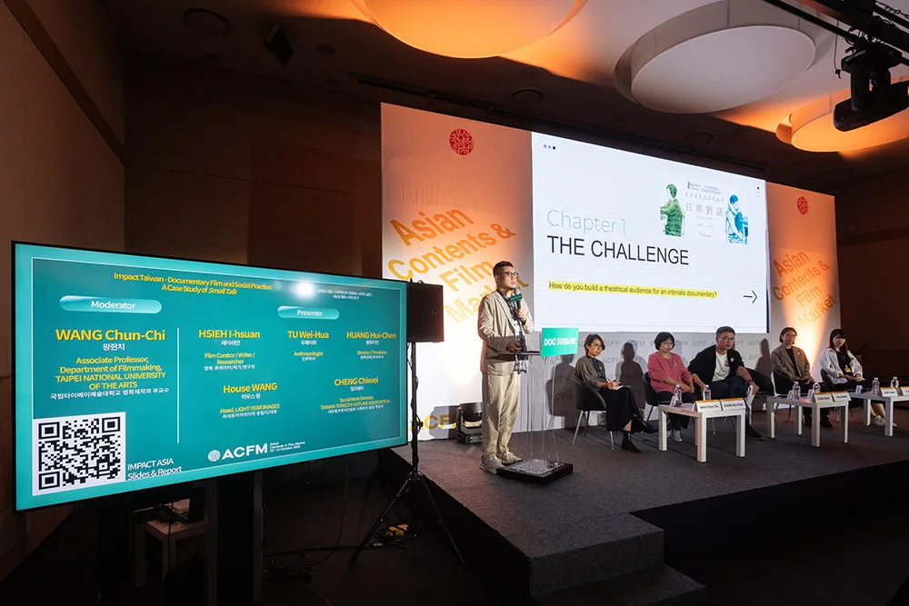
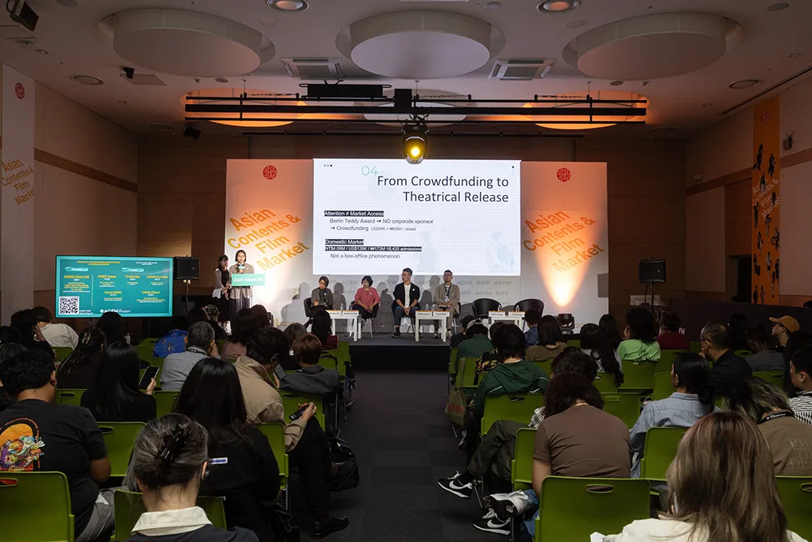
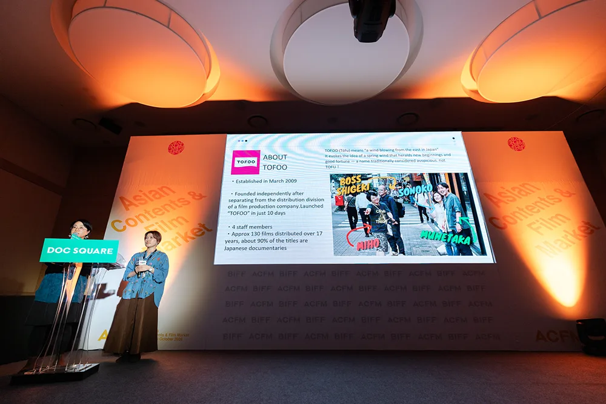
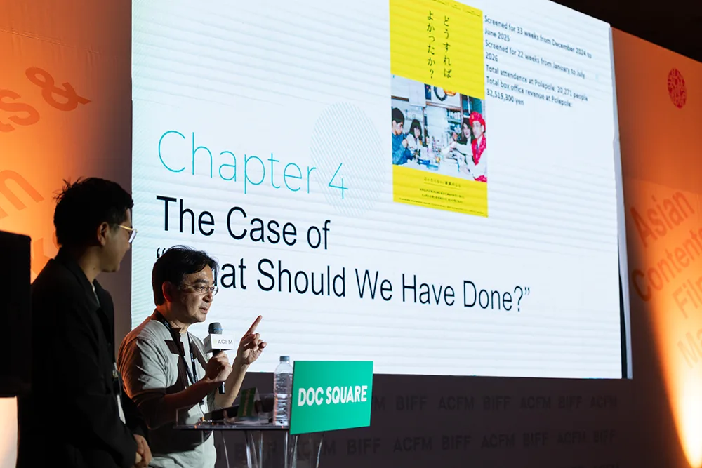

다큐멘터리는 언제나 현실의 가장 뜨거운 현장으로 달려갔다. 감독과 프로듀서는 때로 목숨을 걸고 현장을 누비며 세상이 외면한 진실을 추적했다. 그들이 카메라에 담아 낸 부조리와 폭력, 침묵당한 사람들의 목소리는 스크린을 넘어 사회 변화를 촉구하는 동력이 됐다. 그러나 진실을 드러내는 것만으로 세상이 저절로 바뀌지는 않는다. 영화가 관객의 감정을 움직이는 데서 나아가 여론을 형성하고, 캠페인을 촉발하며, 제도와 정책의 변화로 이어지려면 무엇이 필요할까. 서구권을 중심으로 발전해 온 ‘임팩트 다큐멘터리’가 한국영화계에 던지는 질문이다.
임팩트 다큐멘터리란 무엇인가
지난 10월 12일 부산 벡스코에서는 아시아콘텐츠&필름마켓(Asian Contents & Film Market, 이하 ACFM)의 2026 독스퀘어(Doc Square) 프로그램의 일환으로, 아시아 최초로 ‘임팩트아시아 임팩트데이’가 열렸다. 현장에는 다큐멘터리 감독과 프로듀서 등 수십 명이 참석해 임팩트 다큐멘터리의 현주소와 나아갈 방향을 놓고 열띤 토론을 벌였다. 이날 행사에서 발표자들은 다큐멘터리 상영 이후 나타난 관객의 인식 변화와 정책 개정 등 사회적 영향력을 한국·일본·대만의 사례를 통해 살펴봤다. 아울러 총 260쪽에 달하는 임팩트아시아 보고서도 공개됐다.
박채은 독립미디어연구소 공동대표는 보고서에서 “임팩트 다큐멘터리는 제작·상영·확산의 전 과정에서 창작자, 당사자, 협력 그룹, 관객과 맺은 관계를 통해 공동체와 사회 차원의 변화를 만들어 온 다큐멘터리를 말한다”며 “이는 작품이 다루는 주제나 제작 의도가 아니라 다큐멘터리가 사회와 만나 남긴 변화와 그 경로를 통해 규정된다”고 설명했다.
연구진이 1980년부터 2025년까지 한국 다큐멘터리 4천379편을 전수 조사한 결과, 86.7%가 사회적 이슈나 집단의 권리를 의제로 삼았다. 한국 다큐멘터리는 국가와 방송·언론의 주류 담론 바깥에서 사회적 의제를 다루고, 사회의 현실을 기록해 온 작업이었다.
그렇다면 한국의 다큐멘터리 창작자들은 임팩트 다큐멘터리를 어떻게 받아들이고 있을까. 연구진이 창작자 88명을 대상으로 설문조사를 실시한 결과, 78.4%는 ‘임팩트 다큐멘터리’라는 표현 자체에 거부감이 없다고 답했다. 임팩트를 실현하기 위한 조건으로는 협력 그룹, 사회적 의제와의 연결, 임팩트 예산을 차례로 꼽았다. 임팩트 다큐멘터리 생태계 구축을 위해 시급한 과제로는 사회적 의제에 특화된 예산 확대, 공동체 상영 인프라 구축, 유통 채널 확대를 제시했다.
이러한 조사 결과는 한국 다큐멘터리계가 이미 사회적 의제를 꾸준히 다뤄 왔지만, 작품이 만들어 낸 변화를 지속적으로 확산할 체계는 아직 충분히 갖추지 못했음을 보여 준다. 연구진은 한국의 대표적인 임팩트 다큐멘터리로 <상계동 올림픽>(1988), <낮은 목소리> 3부작(1995~2000), <두 개의 문>(2012), <공범자들>(2017), <학교 가는 길>(2021), <수라>(2023) 등을 선정했다.
<학교 가는 길> 김정인 감독
“다큐멘터리 소개 및 개봉 지원 플랫폼 생겼으면”
2021년 5월 개봉해 3만 8천 명의 관객을 동원한 김정인 감독의 <학교 가는 길>은 서진학교 설립을 둘러싼 갈등을 따라가며 특수학교 부족 문제와 장애에 대한 편견, 통합교육의 필요성을 함께 조명해 호평받았다. 김정인 감독은 “학교 신설을 담당하는 공무원들이 서진학교 사례가 좋은 기록으로 남아 있어 다른 사람을 설득하거나 계획을 수립하는 데 자신감을 얻고 도움이 됐다고 말씀하신다”며 “경기도의 한 학부모 역시 <학교 가는 길> 덕분에 지역 정치인과 담당 공무원들에게 특수학교 설립의 당위성을 설명하고 설득하는 데 큰 도움을 받았다는 이야기를 들었다”고 전했다.
김정인 감독은 사회적 이슈를 다루는 임팩트 다큐멘터리일수록 어느 한쪽에 치우치지 않고 양측의 입장을 균형 있게 다루는 것이 중요하다고 강조했다. 그는 “양측의 입장이 첨예하게 갈리는 상황에서 감독이 팩트를 바탕으로 객관성과 냉정한 균형 감각을 유지하고, 무엇보다 경청하는 자세를 갖춘다면 양측이 어느 정도 동의할 수 있는 공존의 길을 작품에 담아 낼 수 있다”며 “사건이 한창 진행 중인 광풍의 상황에서는 보이지 않던 것들이 시간이 흐르고 불순물이 가라앉은 뒤 차분히 성찰하면 비로소 보이기도 한다. 그 지점을 예리하게 포착해 내는 것이 다큐멘터리 감독의 본령”이라고 말했다.
김정인 감독은 임팩트 다큐멘터리의 활성화를 위해 작품과 사회적 의제를 연결하는 플랫폼이 필요하다고 봤다. 그는 “기업이나 시민단체, 여러 이익단체에 작품을 소개할 수 있는 플랫폼이 마련되면 좋겠다”며 “제작 지원도 중요하지만 개봉 이후 관객을 동원하는 일은 더욱 중요하다. 조직력을 갖춘 단체들과 만날 기회를 마련하는 것만으로도 제작진에게 큰 힘이 될 것”이라고 전했다.
<학교 가는 길>에 출연한 이은자 전 강서장애인부모회 회장도 영화의 사회적 파급력을 강조했다. 그는 “주민들의 님비(NIMBY·Not In My Backyard, 공공의 이익에는 부합하지만 자신이 속한 지역에는 이롭지 않다고 판단되는 시설의 유치를 반대하는 사회적 현상) 정서가 거세지면 행정당국은 소극적으로 대응하거나 문제를 회피하곤 했다”며 “영화 개봉 이후에는 지역 갈등이 발생하더라도 국민의 기본권을 우선해야 한다는 강력한 명분이 생겼다”고 말했다. 이어 “성인 발달장애인의 삶에 대한 관심이 커지면서 정책 논의와 예산 확대가 이뤄졌다”며 “국가책임제 선포와 최근 더욱 촘촘해진 정부 대책 발표는 영화가 가진 사회적 영향력을 보여 주는 사례”라고 강조했다.
<수라>, ‘100개의 극장 추진단’이 만든 흥행 기적
<수라>는 황윤 감독이 새만금의 마지막 갯벌인 수라와 그곳에 깃든 사람과 생명을 7년 동안 기록한 다큐멘터리다. 2023년 6월 개봉해 6만 명의 관객을 동원했다.
생태문화 기획자이자 탐조책방 운영자인 박임자 씨는 ‘<수라> 보고 <수라> 가자’라는 제목으로 텀블벅 펀딩을 진행해 함께 영화를 볼 사람들을 모집했다. 100명이 넘는 사람이 참여를 신청했고, 이를 계기로 동수원 CGV에서 시사회가 열렸다. 이후 다양한 주체가 시사회를 기획하면서 상영 기회도 늘어났다. 이러한 관객의 자발적인 참여는 정식 극장 개봉 전부터 전국에서 100개 극장의 동시 개봉을 추진하는 ‘100개의 극장 추진단’ 프로젝트로 확장됐다. 관객이 단순히 영화를 관람하는 데 그치지 않고 상영을 기획하고 배급에 참여하면서 작품의 메시지를 확산하는 주체로 나선 것이다.
박임자 씨는 임팩트아시아 임팩트데이에서 “한 개인이 지역 미디어센터를 통해 다큐멘터리 제작 과정을 접하고 직접 영화를 만들기도 했다. 좋은 다큐멘터리가 나왔을 때 수동적으로 기다리는 대신, 함께 보고 이야기를 나누고 싶은 영화를 주체적으로 상영하게 됐다”고 말했다.
<수라>의 사례는 상업 배급망에만 의존하지 않더라도 관객과 지역 공동체의 참여를 통해 다큐멘터리의 사회적 의제를 확산할 수 있음을 보여 준다. 관객은 더 이상 완성된 작품을 전달받는 데 머물지 않는다. 작품과 공동체를 연결하고, 새로운 관객을 모으며, 영화가 사회와 만나는 경로를 직접 만들어 낸다.
<1980 사북> 박봉남 감독
“모두가 동의할 수 있는 ‘작은 결론’이 임팩트를 만든다”
<학교 가는 길>과 <수라> 못지않게 사회적 파급력을 보여 준 작품으로는 박봉남 감독의 <1980 사북>(2025)을 꼽을 수 있다. 이 영화는 다큐멘터리가 사회적 변화를 촉진할 수 있다는 사실을 보여 준 사례다.
2025년 10월 영화 개봉 이후 사북사건이 남긴 비극이 공론화됐고, 시민사회와 문화예술계를 중심으로 피해자에 대한 국가의 사과를 요구하는 여론이 형성됐다. 그 결과 2026년 4월 국회에서 ‘1980년 사북사건 국가사과 이행 촉구 결의안’이 통과됐으며, 지난 8월 7일 이재명 대통령은 피해자들을 청와대로 초청한 자리에서 “국가가 그동안 피해자들의 간절한 물음에 충분히 응답하지 못한 점에 대통령으로서 깊은 책임감을 느낀다”며 사과했다.
박봉남 감독은 “<1980 사북>은 처음부터 ‘국가의 사과를 받아 내는 데 기여한다’는 목표를 세웠다”며 “첫째, 편향되지 않은 객관적 시선으로 영화를 제작하고, 둘째, ‘분노와 투쟁’보다는 ‘성찰과 설득’에 방점을 찍는다는 원칙을 세웠다”고 말했다.
박봉남 감독은 역사적 사실을 소재로 다큐멘터리를 제작할 때 “‘전쟁’보다는 ‘경쟁과 경합’이 더 중요하다”고 강조했다. 서로 다른 입장이 충돌하는 과정에서 모두가 동의할 수 있는 작은 결론을 찾아내는 것이 필요하다는 설명이다. 그는 “이것이 다큐멘터리가 만들어 낼 수 있는 긍정적인 사회적 임팩트라고 생각한다”고 덧붙였다.
대만, 정부 지원에 기반한 다큐멘터리 배급
한국에서 임팩트 다큐멘터리에 대한 논의가 본격화하는 가운데 대만의 사례도 주목할 만하다. 셰이쉬안 영화 큐레이터·작가와 두웨이화 인류학자는 대만에도 임팩트 다큐멘터리라는 개념이 존재하지만, 아직 체계적인 제작·배급 모델로 자리 잡지는 못했다고 설명했다.
대만은 1980년대 계엄 해제 이후 공영방송 제도가 정착하고 정부의 영화·영상 지원 정책이 확대됐다. 그 결과 1998년 대만 공영방송(PTS)이 정식 출범해 다큐멘터리 위탁 제작과 방송, 창작 인재 양성을 위한 주요 플랫폼으로 자리 잡았다.
시장 논리에 따라 작동하는 산업 모델은 충분히 형성되지 않았지만, 정부 지원을 바탕으로 기획·개발과 제작, 후반 작업, 영화제 참가, 후속 창작으로 이어지는 공공 지원 체계가 만들어졌다. 이는 대만 다큐멘터리가 ‘공공문화 생산’의 성격을 갖게 된 중요한 배경이다.
이러한 흐름 속에서 주목할 만한 작품이 2016년 완성된 황후이전 감독의 <일상대화>다. 표면적으로는 딸과 어머니의 대화를 다루지만, 실제로는 동성애와 모녀 관계, 가정폭력, 가족 내 성폭력, 여성의 삶, 세대 간 트라우마 등 다층적인 문제를 다룬다.
이 영화는 국제영화제 수상 경력과 젠더 의제를 둘러싼 사회적 관심을 바탕으로 2017년 크라우드 펀딩에서 120만 대만달러 이상의 자금을 모았다. 이후 입소문을 바탕으로 관객과 적극적으로 소통했다. 그 결과 총 408만 대만달러의 흥행 수익을 올리고 1만 8천425명의 관객을 동원했다.
극장 배급이 종료된 지 9년이 지난 지금도 대만 여러 지역에서 상영이 이어지고 있다. 작품은 동성애와 가족 관계를 둘러싼 논의를 지속적으로 환기하며, 영화가 극장 상영 이후에도 사회적 대화를 이어 가는 매개가 될 수 있음을 보여 준다.


‘임팩트 대만 - 다큐멘터리 영화와 사회적 실천: <일상대화> 사례 연구’ 현장(제공=부산국제영화제)
일본, 커뮤니티 시네마와 <어떻게 해야 했을까?>
일본 다큐멘터리는 커뮤니티 시네마를 통해 관객과 만나고 있다. 이와사키 유코 커뮤니티시네마센터 사무국장은 일본에서 다큐멘터리의 극장 상영이 본격화한 것은 2000년대 이후라고 설명했다.
2003년 도쿄 나카노구에 독립영화와 다큐멘터리 전문 상영관인 ‘폴레폴레 히가시나카노’가 문을 열었고, 2009년에는 다큐멘터리 전문 배급사 ‘도후’가 설립됐다. 2017년 1월 폴레폴레 히가시나카노에서 개봉한 <인생 후르츠>는 이례적인 장기 상영작으로 자리 잡았다. 도카이 TV가 제작한 이 다큐멘터리는 개봉 이후 오랜 시간이 흐른 뒤에도 상영과 관객의 발길이 이어지는 작품으로 알려져 있다.
일본의 커뮤니티 시네마는 지역에서 상영되는 작품의 다양성을 확대하고, 흥행의 주류에 속하지 않는 영화도 관객이 접할 기회를 넓히는 상영 조직과 그 활동을 뜻한다. 소규모 영화관인 ‘미니시어터’, 구작이나 개봉관 상영이 끝난 신작을 중심으로 프로그램을 편성하는 ‘명화좌’, 영화 필름과 관련 자료를 보존하는 ‘필름 아카이브’, 영화관 밖에서 이뤄지는 ‘자주 상영’, 시네마테크 등이 그 기반을 이룬다.
2024년 12월 개봉한 <어떻게 해야 했을까?>는 상영관 수가 150개를 넘어서는 등 일본 사회에서 반향을 일으켰다. 한국에서도 지난 7월 29일 개봉해 10만 명 이상의 관객을 동원하며 두 달 넘게 장기 상영 중인 작품으로, 조현병에 대한 사회적 편견을 완화하고, 환자와 가족이 겪는 현실을 이해하는 계기를 마련했다.
한 가족의 20여 년을 기록한 이 다큐멘터리는 정신질환을 개인의 문제에 가두지 않고 가족 돌봄과 당사자의 존엄, 사회적 책임의 문제로 확장했다. 일본과 한국에서 이어진 흥행과 관객과의 대화는 다큐멘터리가 사회문제를 단번에 해결하지는 못하더라도, 오랫동안 외면해 온 문제를 공론의 장으로 끌어내고 변화의 출발점을 만들 수 있음을 보여 준다.


‘임팩트 일본 - 커뮤니티로서의 영화제, 극장, 관객: <어떻게 해야 했을까?> 사례 연구’에서 다뤄진 다큐멘터리 전문 배급사 도후(왼쪽)(위)와 <어떻게 해야 했을까?>
(제공=부산국제영화제)
영국 ‘독 소사이어티’·미국 ‘선댄스 연구소’
임팩트 다큐멘터리의 든든한 후원군
한국·대만·일본의 사례에서 알 수 있듯, 아시아에서는 임팩트 다큐멘터리를 뒷받침하는 체계가 아직 충분히 갖춰지지 않았다. 반면 서구권에서는 오래전부터 제작과 배급, 사회적 캠페인을 연결하는 지원 생태계가 발전해 왔다.
2005년 설립된 영국의 독 소사이어티(Doc Society)는 영화 제작 지원과 임팩트 전략 수립, 전문 인력 양성, 파트너십 구축, 다큐멘터리 분야 전반의 인프라 조성 등을 수행한다. 대담하고 독립적인 다큐멘터리 스토리텔링을 지원하며, 예술가와 언론인, 영화 제작자들이 기업과 정부, 알고리즘의 과도한 통제에서 벗어나 창작의 주도권을 유지할 수 있도록 돕는다.
특히 독 소사이어티의 ‘굿 피치(Good Pitch)’는 제작자와 시민단체, 재단, 기업, 정책 관계자를 연결해 영화가 제기하는 사회적 의제를 공동의 행동으로 전환하도록 지원한다. 상영 이후에도 캠페인과 파트너십이 지속될 수 있도록 관련 주체들을 연결하는 것이다. 독 소사이어티는 또한 다큐멘터리가 단순한 상영에 그치지 않고 구체적인 사회적·정치적 변화를 만들어 내도록 캠페인을 기획하고 실행하는 전문 인력 ‘임팩트 프로듀서(Impact Producer)’의 활동을 지원한다.
미국 선댄스 연구소 역시 다큐멘터리의 기획 초기 단계부터 제작과 배급, 사회적 캠페인에 이르기까지 다양한 지원 프로그램을 운영한다. 선댄스 연구소의 ‘다큐멘터리 펀드(Documentary Fund)’는 문화적·사회적 영향력을 창출하는 장편 다큐멘터리를 제작하는 전 세계 논픽션 스토리텔러를 지원한다. 올해는 총 19개 프로젝트가 선정돼 100만 달러 이상의 자금을 지원받게 되며, 해당 자금은 용도 제한 없이 사용할 수 있다.
이들 기관의 역할은 단순히 제작비를 지원하는 데 그치지 않는다. 창작자가 작품을 완성한 뒤 관객을 찾아 나서는 방식에서 벗어나, 기획 단계부터 작품이 누구와 만나고 어떤 변화를 만들어 낼지 함께 설계한다. 제작과 배급, 캠페인, 전문 인력 양성을 연결하는 체계가 임팩트 다큐멘터리 생태계의 핵심인 셈이다.
서구 모델의 핵심은 자선 재단 중심의 ‘필란트로피 자본’
그렇다면 이러한 서구식 모델을 한국에 적용할 수 있을까. <님아, 그 강을 건너지 마오>(2014)와 <1980 사북>의 한경수 PD는 서구 모델의 특징을 분석하면서 현재 한국 다큐멘터리 시장에 이를 그대로 이식하기는 어렵다고 진단했다.
한경수 PD가 꼽은 서구 모델의 핵심 가운데 하나는 자선 재단을 중심으로 형성된 ‘필란트로피 자본(Philanthropic Capital)’이다. 이는 자선 기부금이나 공익 재단의 재원을 바탕으로 상업적 흥행 성적과 무관하게 사회적 가치와 공익성을 실현하기 위해 투입하는 자금을 뜻한다. 일반적인 상업영화 투자가 투자금 회수와 수익 창출을 목표로 한다면, 필란트로피 자본은 사회적 변화를 중요한 성과로 평가한다.
이러한 지원 체계에서는 영화 제작비와 캠페인 예산을 구분해 편성하는 것이 중요하다. 영화가 완성된 뒤 제작진에게 홍보와 배급을 맡기는 데 그치지 않고, 작품을 유통하고 사회적 변화를 이끌어 내기 위한 별도의 임팩트 예산을 마련하는 것이다. 이 예산은 국회의원 대상 시사회 개최, 전국 시민단체와의 연대를 위한 실행 가이드 제작, 후속 탐사보도와 언론 홍보, 필요한 법률 지원 등에 활용될 수 있다.
둘째는 전문화된 분업 체계다. 제작자는 안정적인 재원을 바탕으로 프로젝트를 기획·제작하고, 임팩트 프로듀서는 다큐멘터리를 단순한 관람용 콘텐츠가 아닌 사회적 변화를 이끄는 도구로 기획하고 실행한다. 감독이 카메라 뒤에서 영화를 만드는 데 집중한다면, 임팩트 프로듀서는 카메라 밖에서 작품이 사회와 만나 어떤 변화를 만들어 낼지 설계하는 전략가이자 캠페인 디렉터의 역할을 맡는다.
셋째는 공영방송을 비롯한 공공미디어의 역할이다. 영국 BBC의 다큐멘터리 시리즈 <스토리빌(Storyville)>(1997~)이나 채널 4와 같은 방송사는 독립 다큐멘터리의 기획 단계부터 제작에 참여하고 자금을 지원하는 역할을 해 왔다. 방송사와 독립 제작사 간의 공동제작 및 커미셔닝 시스템은 창작자의 권리와 제작 자율성을 보장하는 방향으로 설계될 수 있다. 이러한 파트너십이 뒷받침될 때 제작진은 안정적인 제작 기반을 확보하고, 임팩트 프로듀서는 작품의 사회적 확산을 위한 전략과 캠페인에 집중할 수 있다.
“한국형 임팩트 다큐멘터리 생태계 구축해야”
그렇다면 한국의 임팩트 다큐멘터리는 어떤 방향으로 나아가야 할까. 한경수 PD는 ‘임팩트 캠페인 전용 트랙’ 신설과 인건비 인정이 우선돼야 한다고 강조했다. 영화진흥위원회 지원사업 안에 배급·개봉 지원과 별도로 캠페인 예산을 마련하고, 임팩트 프로듀서의 노동을 정당한 사업비 항목으로 인정해야 한다는 것이다. ‘공공·시민사회 매칭 펀드’ 조성도 필요하다고 주장했다. 공공 기금과 환경·인권 분야 공익 재단, 기업의 ESG 자본을 결합해 정치적 외풍에 흔들리지 않는 독립적인 연대 기금을 조성해야 한다는 설명이다.
방송사와 독립 제작사 간의 협력 구조도 바뀌어야 한다. 한경수 PD는 영국 BBC나 미국 PBS와 같은 공공미디어 모델을 참고해 방송사가 독립 제작사의 지적재산권(IP)을 존중하고, 제작 초기 단계부터 투자와 배급망을 공유하는 수평적 파트너십을 구축해야 한다고 강조했다. “한국의 창작자들이 부당한 소송이나 국가적 탄압에 직면했을 때 이들을 방어해 줄 공익 법률 네트워크와 진실을 함께 확산시켜 줄 독립 언론 연대망도 함께 구축돼야 한다”는 것이다.
한국 다큐멘터리는 이미 사회적 변화를 이끌어 낼 수 있음을 입증해 왔다. 김정인 감독의 <학교 가는 길>은 장애인 교육권을 둘러싼 갈등을 공론화하고, 특수학교 설립을 넘어 발달장애인의 삶과 국가의 책임을 묻는 정책 논의로 나아갔다. 황윤 감독의 <수라>는 관객을 단순한 관람자에 머물게 하지 않았다. 시민들이 직접 상영관을 확보하고 공동체 상영을 확산하는 관객 주도형 배급 모델을 통해 새만금 갯벌의 가치를 더 많은 사람에게 알렸다. 박봉남 감독의 <1980 사북>은 사북사건의 진실을 재조명하며 국가폭력의 역사를 사회적 의제로 끌어올렸다.
이제 영화인의 과제는 이 값진 성과를 개별 작품의 ‘예외적 기적’으로 남겨 두지 않는 것이다. 창작자가 온전히 몰입할 수 있는 제작 환경, 관객과 공동체를 잇는 유기적인 배급망, 사회적 변화를 설계할 전문 임팩트 프로듀서, 그리고 이를 뒷받침할 지속 가능한 재원이 시급하다. 한 편의 영화가 변화의 불씨를 지필 수는 있다. 하지만 그 불씨를 사회 전체로 확산하고 지속되게 하는 것은 결국 ‘생태계’의 힘이다. 스크린 속 진실이 일회성 울림을 넘어 실질적인 변화로 뿌리내리도록 영화와 세상이 만나는 길을 함께 설계해야 할 시점이다.
다시 쓰는 역사를 향한 응원
독스퀘어 다큐멘터리 WIP 쇼케이스 어워드
부산국제영화제의 공식 마켓인 ACFM은 지난 10월 13일 부산 벡스코 제2전시장 이벤트룸 A에서 첫 통합 ‘ACFM 시상식’을 개최하고 올해의 수상작과 지원 결과를 발표했다. 이 가운데 독스퀘어 다큐멘터리 WIP 쇼케이스에서는 올해 신설된 임팩트아시아어워드와 뉴스타파어워드의 수상작을 선정했다.
임팩트아시아어워드는 오늘날 민주주의를 향한 전 세계적 투쟁과 홍콩 사람들이 느끼는 상실감을 조명한 마치항 감독의 <문 이즈 와칭 유>, 정신장애 당사자 공동체 ‘파도손’의 화가들과의 만남을 다룬 장민경 감독의 <파랑>, 제도권 밖으로 밀려난 중국의 3세대 이주노동자들을 들여다본 양난·허페이윈 공동 감독의 <레스트리스 페어웰> 3편에 돌아갔다. 각 작품에는 미화 5천 달러가 수여된다.
뉴스타파어워드에도 <레스트리스 페어웰>이 선정됐다. 작품에는 1천만 원의 제작지원금과 완성 후 뉴스타파함께재단 채널을 통해 60분 편집본을 선보일 기회가 제공된다.
독스퀘어는 다큐멘터리 창작자와 영화제 프로그래머, 세일즈사, 배급사 등 전 세계 다큐멘터리 산업 관계자들을 연결하기 위해 2025년 출범한 프로그램이다. 네트워킹, 피칭, 패널 등 다양한 세션을 운영하여 다큐멘터리 감독과 산업 관계자 간 교류의 기회를 제공한다. 아시아 각국에서 제작 중인 다큐멘터리 프로젝트들을 소개하며 전문 지식 및 제작 지원 방안도 공유한다.
김영덕 ACFM 위원장은 “아시아 다큐멘터리는 이미 오랫동안 사회 변화를 위한 목소리를 내 왔다”면서 “우리는 그것을 ‘임팩트’라고 부르지 않았을 뿐이다. 임팩트아시아는 그 역사를 다시 쓰고, 앞으로의 임팩트를 더 힘차게 응원하겠다”라고 말했다.